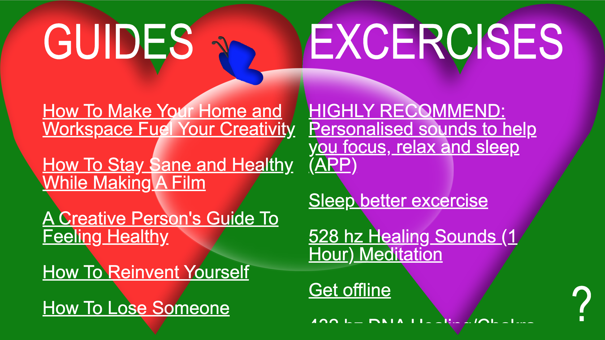
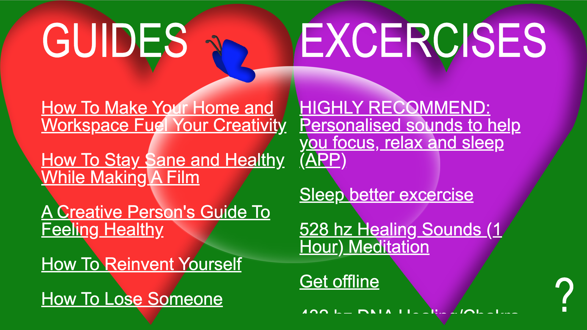
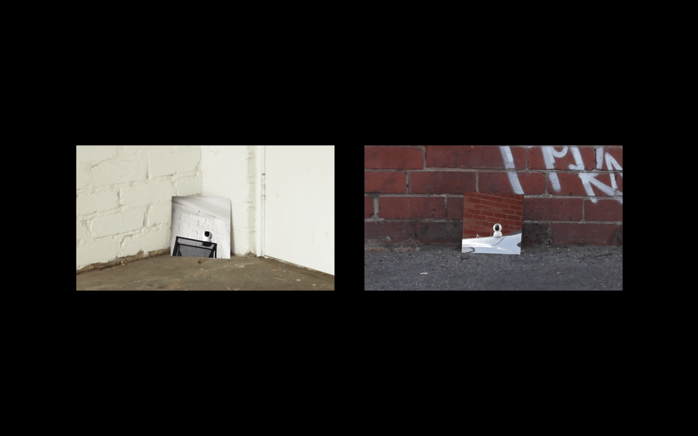
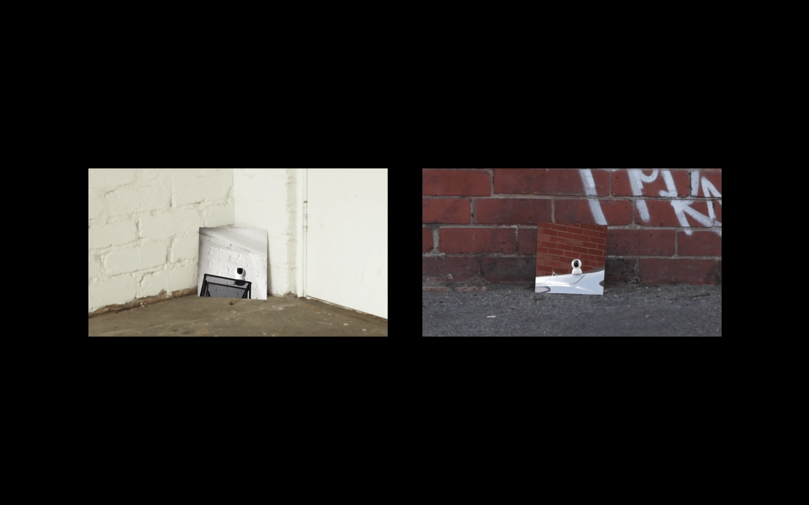

Projects
Feeling Healthy ON THE INSIDE
Feeling Healthy On The Inside is a guide for students about how to stay emotionally healthy. This is a public Website for the public good.
"When you’re working hard to sustain your creative vision and your livelihood, it can be hard to prioritize your own physical and mental health. But feeling physically strong and emotionally grounded is essential to maintaining focus, staying inspired, and doing your best work. So what does it take to feel good about your own body, mind, and overall wellbeing—and how can a creative practice feed into one’s health?" (The Creative Independent.)
One thing I've learnt about maintaining my emotional health is that you have to view your problems from the right perspective. When you view things from the inside, you can see what the problem is hence able to solve it, but when you are on the outside, things don't appear as straight forward as they may be.
"When you’re working hard to sustain your creative vision and your livelihood, it can be hard to prioritize your own physical and mental health. But feeling physically strong and emotionally grounded is essential to maintaining focus, staying inspired, and doing your best work. So what does it take to feel good about your own body, mind, and overall wellbeing—and how can a creative practice feed into one’s health?" (The Creative Independent.)
One thing I've learnt about maintaining my emotional health is that you have to view your problems from the right perspective. When you view things from the inside, you can see what the problem is hence able to solve it, but when you are on the outside, things don't appear as straight forward as they may be.
2019
visit web

 



 
